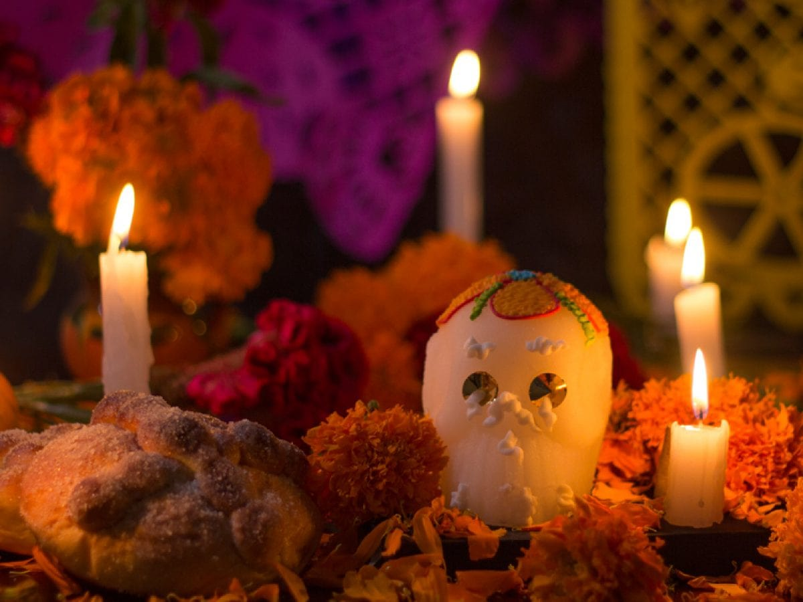

Significado de la Ofrenda en México
Ofrendas más grande de Mexico
- Ofrenda de Tlacoapa
- Ofrenda de Coatepec
- Ofrenda de Jarácuaro
- Ofrenda de El Júpare
Elementos de una ofrenda
- Agua
- Velas y veladoras
- Calaveritas
- Copal e Incienso
- Flores
- Pan de Muerto
- Papel Picado.
Dia de muertos
El Día de Muertos es una celebración tradicional y festiva que se lleva a cabo en México y en algunas otras culturas de América Latina. Es una celebración en la que se honra a los difuntos y se celebra la vida de aquellos que ya no están físicamente con nosotros. La festividad se lleva a cabo principalmente los días 1 y 2 de noviembre, coincidiendo con la celebración católica del Día de Todos los Santos y el Día de los Fieles Difuntos, respectivamente. Esta festividad tiene profundas raíces prehispánicas y ha sido reconocida por la UNESCO como Patrimonio Cultural Inmaterial de la Humanidad en 2008. Aunque es más prominente en México, también se celebra en otras partes de América Latina y en comunidades con una fuerte presencia de la diáspora mexicana.
Comida en una ofrenda
En la tradición del Día de Muertos en México, colocar alimentos en la ofrenda es una parte fundamental para recibir a los difuntos y celebrar sus vidas. Los alimentos son una forma de honrar a los seres queridos fallecidos y se cree que el aroma de la comida atraerá a las almas de regreso.
haz clcik en esta imagen para una sorpresa